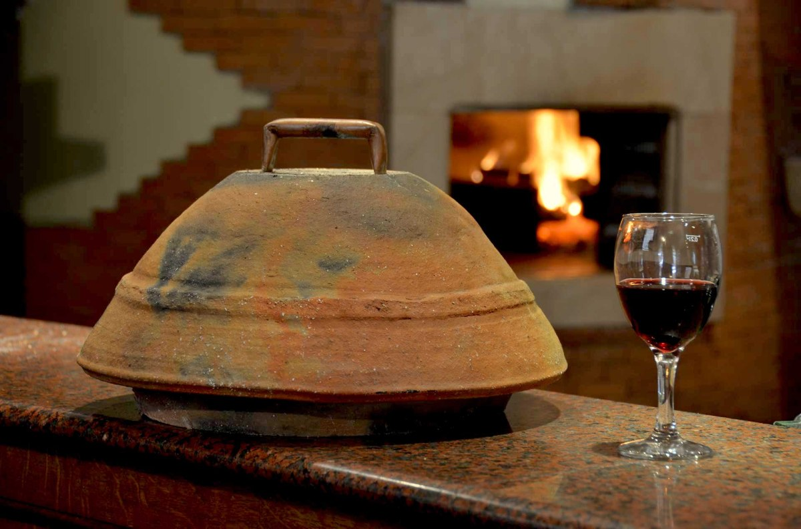
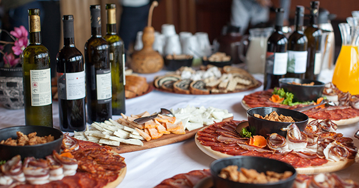
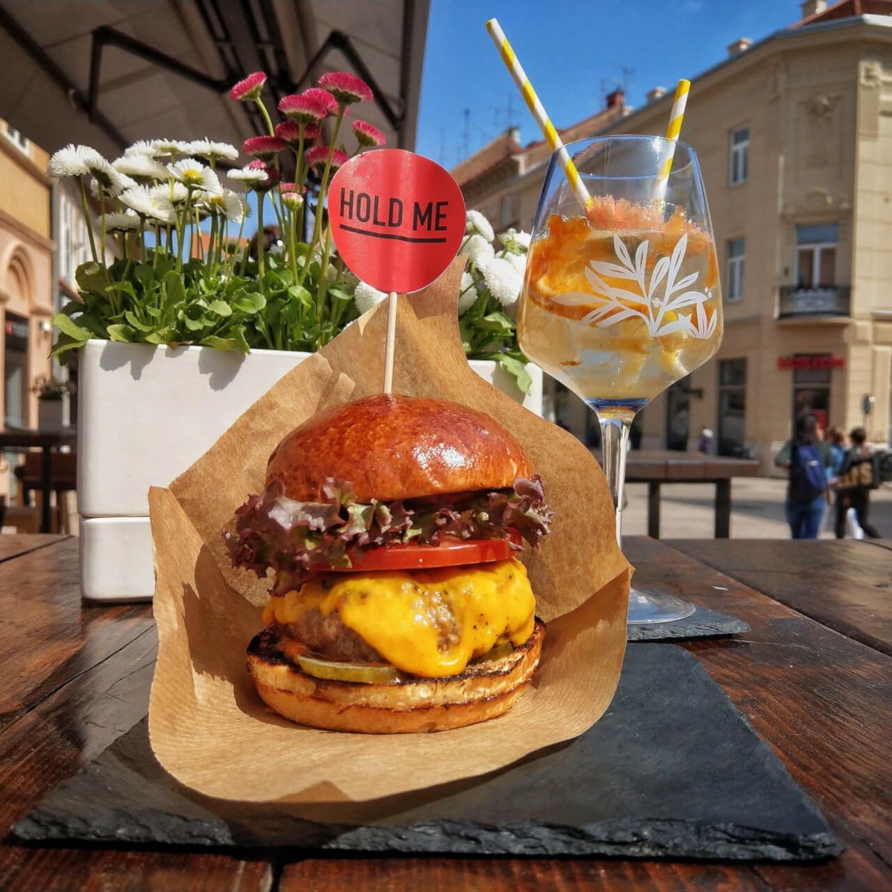

Where to Eat
-
Traditional food
Let’s get right to it: the food offering in Osijek is off the charts. From hearty soups to roasted game to cured meats and tasty pastas, the common ingredients are homemade and fresh.
Try sarma(cabbage filled with minced meat), peka, Carp on forked branch, chobanac, kulen, chvarci and many moore. See reviews here
-
Contemporary and urban food
Osijek offers American style burgers, pizzas (with a twist- Try Slavonian pizza)
-
Festival offerings
During festivals or Christmas fair Osijek is offering mix of traditional food from different areas. You can try Langoshica-Hungarian-style, deep-fried flatbread topped with sour cream and garlic, sausages, fritule (mini donoughts) and much more
-   